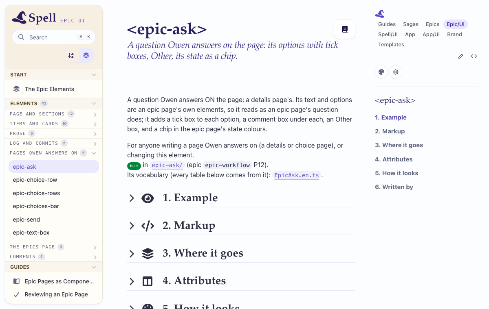

Open Epic UI's page for epic-ask and skim it, then one more from its side column's "Pages Owen answers
on" (epic-choice-row, epic-send ...).
You can tell from each page what the element is for and how to write one: 1. Example (the live element), 2. Markup, 3. Where it goes, 4. Attributes, 5. How it looks, 6. Written by.

Name the page and the section that reads badly, and why.
Carried over from
Open /epic-ui/ (from this branch: /worktrees/<w>/epic-ui/) and the six new pages
under "Pages Owen answers on": each has a live example, its markup, where it goes, its tables from its vocabulary,
its look, what writes it. epic-option's and epic-choices' pages list the new attributes
and states.
Claude · 2026-10-19 13:13
Checked by Claude, in Chromium on the main page server (Epic UI moved since: it's at
/components/epics/ now, not /epic-ui/). The six pages under "Pages Owen answers on"
(epic-ask, epic-choice-row, epic-choice-rows, epic-choices-bar, epic-send, epic-text-box), and epic-option's and
epic-choices':
selected, done, badge,
badge-color, state-icon, state-color, state-label) and
states (answering, ticked, filtered); epic-choices' the
answering state.
Left for Owen, only whether they read well:
Step: open Epic UI's epic-ask page and skim it, then one more from the side column's "Pages Owen answers on".
Should: you can tell from the page what the element is for and how to write one.
If not: name the page and the section that reads badly.